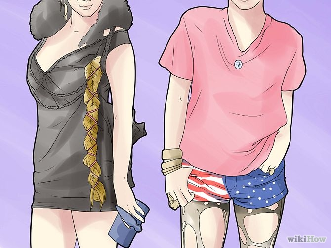

How to
Be Like
Looking
Like Her
1. Copy her makeup.
Ke$ha doesn't always wear crazy stage makeup, but it is her go-to when she goes out. Black eyeshadow and smudged eyeliner are a must. She often wears more makeup around her right eye, inspired by A Clockwork Orange, like a star or a lightning bolt. The patterns are all very original, ranging from the black running eyeliner look, to the neon bright slash marks.
- Ke$ha describes her making as being "whatever's left over from the night before." Obviously she doesn't put much thought into it! If people think perfect makeup is needed to be beautiful, they're wrong.
2. Bathe in glitter.
The more, the merrier. Ke$ha says she spends thousands of dollars on glitter every month. Saying she wears a lot of glitter would be an understatement. She often paints it on her face and body in crazy patterns. And there is not a color she wouldn't wear!
- A pro tip? Spray hairspray wherever the glitter is on your body (aka everywhere) to seal it. It's a routine Ke$ha and her bandmates go through prior to any show.
3. Work on the hairdo.
Ke$ha's bedhead curls are natural. But if you don't have hair like Ke$ha's, then wash your hair at night with shampoo and conditioner, braid it, and go to bed. You could also spray some curl-activating spray into it. When you wake up, your hair should be dry. Take it out and take a look. If your hair isn't curly enough, spray more curl-activating spray, scrunch your hair, and curl it with a curling iron.
- Her hair isn't neat, either. If it is lying smooth, or you have thin hair, tease it a bit to give it some volume. Imagine partying at the club all night long, hitting up Jack In The Box, pounding some Red Bull, walking home, and going straight to church. That's her look. Well, minus the church part.
4. Adopt the "garbage chic" style.

Ke$ha would literally pilfer an AC/DC shirt out of a dumpster if she had the opportunity. Apart from dumpsters, she gets most of her clothes from thrift stores. Most of her shirts are band tee-shirts with her favorite bands on them -- you can get good band tops at shops like Hot Topic. Also try bright print t-shirts or tops with sequins and glitter. Remember that Ke$ha often wears black, but the patterns can be any color. Anything wild works too.
- She wears short-shorts a lot of the time. And she definitely has the legs for it! As for the overall look, if it's a little over-the-top, that's her. She loves layers, tons of accessories, bright colors, and anything that has pizzazz.
5. Get shiny.
Back in her animal studying days, she learned that animals love anything that shines. People are the same she argues, so she always employs lots of shine. Even when she's on the red carpet, she glimmers. Whether she dresses up or down, she's sparkling.
- Think about sparkly, bangle bracelets, sequined tops and bottoms, sparkly shoes, and crazy, eye-catching nail polish. If it attracts your attention, it probably fits the look.
6. Rip up those tights.
Ke$ha is often found sporting tights underneath her short-shorts. They're usually black and they're usually ripped to shreds. Grab a few pairs that you haven't worn in years and take the scissors to 'em. Just make sure they don't look like you purposefully ripped them up yourself!
- The best way to do this is to put the tights on and then start poking holes. Make the holes tiny initially and then streeeeetch the material to make it run. The more haphazard and unintentional it looks, the better.
7. Pack up the heels.
Ke$ha says herself that she can't walk in heels, much less dance. She also says that girls don't need push up bras and heels to be attractive. Basically, she's awesome. So put away those heels and hit the dance floor in those high tops. Why not?
- She is often seen in undone high tops or boots. Laces are for people who haven't gone platinum and don't bathe in glitter. Only lace up your shoes if they won't stay on. Otherwise, let 'em fly free.
8. Wear her jewelry line.
That's right: Ke$ha now has her own entire line of jewelry. It's called "Kesha Rose." Some of it's pretty expensive, but some of it is cheap, too. Could there be an easier way to be Ke$ha pre-approved? Probably not.
Acting
Like Her
1. Chill out!
Ke$ha does not care what other people think of her; she has a very care-free attitude. She can be wild, but try not to over do it. Acting too over-the-top can lead to trouble with your peers and your school or job.
- It's very important to be your own person. Ke$ha doesn't care what the popular kids are doing, wearing, or what they look like. If you wanna be like her, do what comes naturally to you. Others' opinions aren't even on your radar.
2. Get into her music.
Unlike most pop artists Ke$ha writes most of her own songs. She has written and recorded over 200 songs, but only 24 are released in the USA. If you want to write music like hers, listen to Ke$ha's lyrics. They are not deep or very meaningful, but they do tell more about her.
- Ke$ha apparently hated two girls named Jeanie and Katie, and she wrote about it in Back$tabber. Her song N-N-N-Neva Baby is about a creepy guy having a crush on her, and her song Disgusting is about her liking a guy a lot, and her wishing that she didn't like him so much. D-I-N-O-$-A-U-R is about creepy old guys. Whatever the topic is, she makes it catchy and fun.
3. Party.
There's no two ways around it: Ke$ha parties hardy. She parties like it's 1999. She fights for her right to party. If she has any downtime, she's partying. So go to parties with your friends or even throw them! Now how would Ke$ha decorate the house?
Get goofy.

Whenever Ke$ha is asked a ridiculous question, she always rolls with it. "Do you always brush your teeth with a bottle of Jack?" She would say, "Yes, all the time -- now do you want a tattoo with my new tattoo gun?" She's totally goofy. And she gets away with it!
- Do this more around your friends than your parents and teachers. If your English teacher asks you about the book you're reading, don't reply with "I got my glasses and I'm out the door. I'm gonna hit the city!" That won't go over well. But you and your friends can be as goofy as you can imagine.
4. Talk like her.
Ke$ha does this thing that's called "vocal fry." Think about how Britney Spears says "Oh baby, baby" in Hit Me Baby One More Time. That's vocal fry. It mostly happens at the end of sentences. It's a creaky voice. The same voice you might make to scare your friends is something Ke$ha uses all the time.
- Apart from vocal fry, she's really enthusiastic and fun. She's very happy and energetic -- and her voice is too! When you're talking, try to be upbeat. She talks like her songs feel (which makes sense, because she's writing them!).
5. Be animal-friendly.
Ke$ha is starting a fake-fur line and has animal-friendly jewelry. Clearly caring about the environment is important to her -- and it should be! All of us should be concerned with life around us. To be like her, stay away from fur, leather, and products that are tested on animals.
- Ke$ha donated 1,000 pounds of dog and cat food to shelters in Nashville. She's vegetarian and just loves, loves, loves animals. She has a cat named Mr. Peep$ and he even has his own Twitter!
6. Learn an instrument.
Ke$ha is learning a whole bunch of different instruments, so pick practically any one and she's learning it. Right now, it's the guitar.[3] But she knows how to play piano and the keytar, too! She's really musically inclined having practically grown up in a studio (her mom was a songwriter, too). She even writes songs for Miley Cyrus!
- She's very into rock n' roll, so if you pick an instrument that can be put in a band, double bonus points. The guitar, drums, keyboard or piano are all really good choices. But any instrument is better than none!es, loves animals. She has a cat named Mr. Peep$ and he even has his own Twitter!
Getting
Inspired
1. Watch her music videos.
You gotta get your fix on all things Ke$ha, so watch all her music videos! Notice how off-the-beaten-path she is and all the little crazy things she gets away with. She always pushes the envelope. Her makeup is often funky but not always -- she can do simple and she can do ridiculous! That's why she's so great.
- She can go from super girly in "Take It Off" and "Your Love is My Drug" to gangsta chic in "Crazy Kids." In short, she can do it all. But she always makes it big and eye-catching.
2. Memorize her awesome lyrics.
In order to get in tune with Ke$ha, you gotta memorize her lyrics. She always tells it like it is, so you'll be speaking the truth. You probably have all her lyrics memorized already, don't you?.
3. Go to her concerts.
Check out her website for details. She's quite the entertainer and you'll probably end up covered in glitter (she sometimes rocks a glitter cannon!), but that's the idea, right?
- Ask your parents if you're under 18 for permission to go. Concerts can get pretty wild and crazy and it may be best to a have a ride to and from the venue. And maybe mom can help chip in for the ticket costs or a t-shirt!
4. Watch her MTV documentary.
It's called "Ke$ha: My Crazy Beautiful Life." Fair warning, she does some pretty ridiculous stuff! Her life really is quite crazy. But for a sneak peek, there's no better look -- it's even filmed by her older brother Lagan.
5. Go with the flow.
The number one thing about Ke$ha is that she doesn't take herself too seriously, she doesn't take dating too seriously, and she doesn't take life too seriously. She just rolls with it. Whatever it is, it's cool. She's cool. It's all cool. Nothing's too dramatic or a big deal. It's always chill.
- So, in short, to be like her, be drama-free. She's not caught up in Images or who has what or the he-said-she-said or even money, despite it being her signature symbol. It's about being happy and care-free. What a great mantra!
Tips
- Don't try to change who you are to fit-in. If you don't feel comfortable wearing something, then don't! You can change the style and make your own personal looks.
- Listen to her music from her CDs and her unreleased songs; these can help you better understand what she's like (because she writes most of her songs).
- Watch live performances that she does, or music videos so you can see what her attitude and style are like.
Warnings
- If you try to be too much like her, people will see it, and say "She tries way too hard to be like Ke$ha" or something like that. Be yourself, but add parts of Ke$ha in there.
Things You'll Need
- Liquid black eyeliner
- Black eyeshadow
- Black mascara
- A lot of eyeshadow colors, such as bright blue, green, or purple
- Clothes from a thrift store that match her style
- Curl activating spray and curling iron
- Body Gitter
- Tights